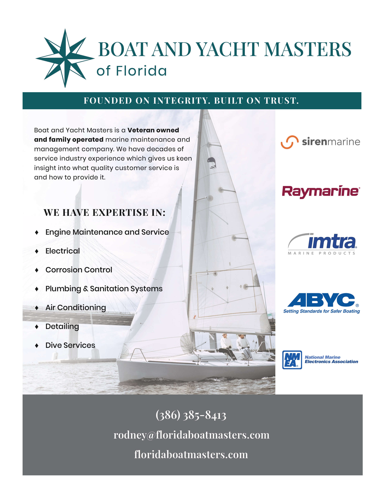
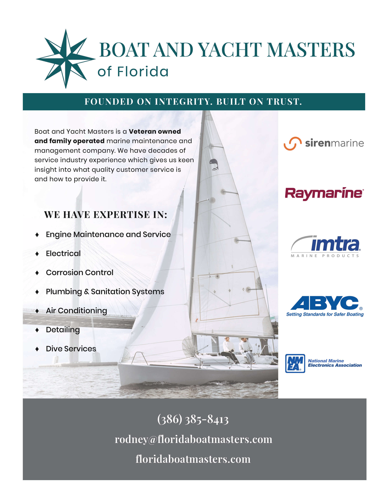
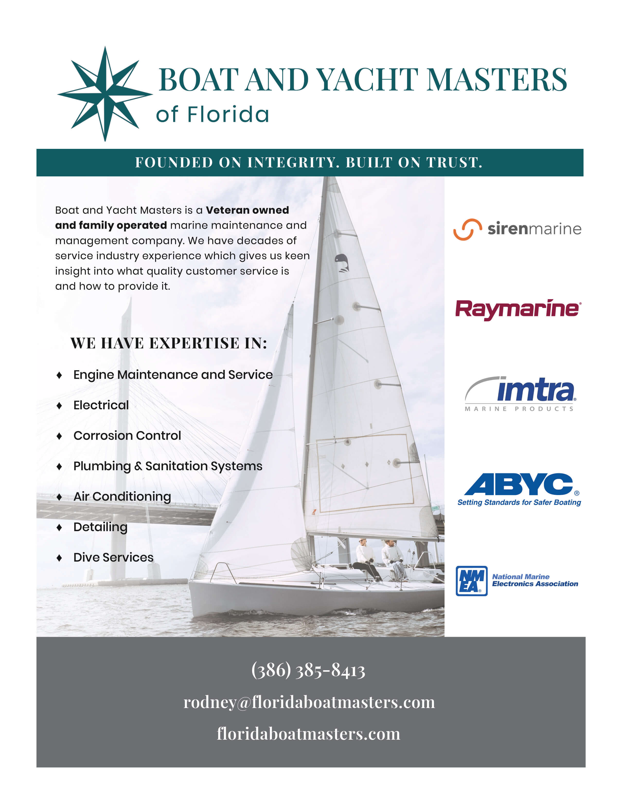

Below are various graphic and print work that I have done either for clients or as a project for a course in my degree. The first work you see is an article setting I did for a Typography course I had taken. I wanted to reach out of my domains and try to create something with some uniqueness.
The next work you see is a brodcure ad I had made for the client Boat and Yacht Masters of Florida. The owner reached out to me seeking one to be made for a brochure that a local yacht club makes every year.
Lastly you will see inviation and annoucnments that I have designed using Illustrator for personal use.
